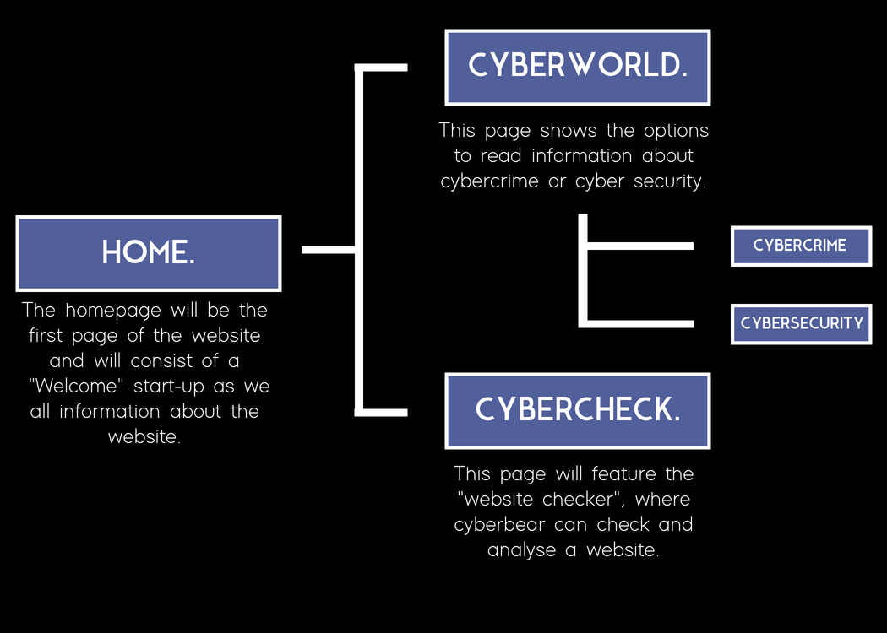
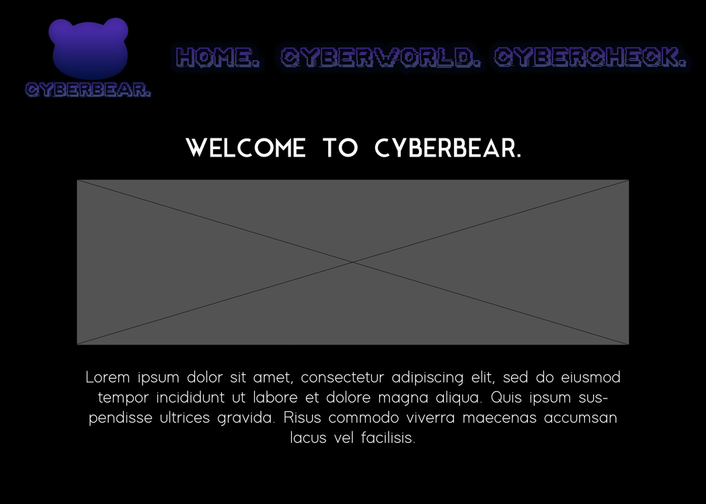
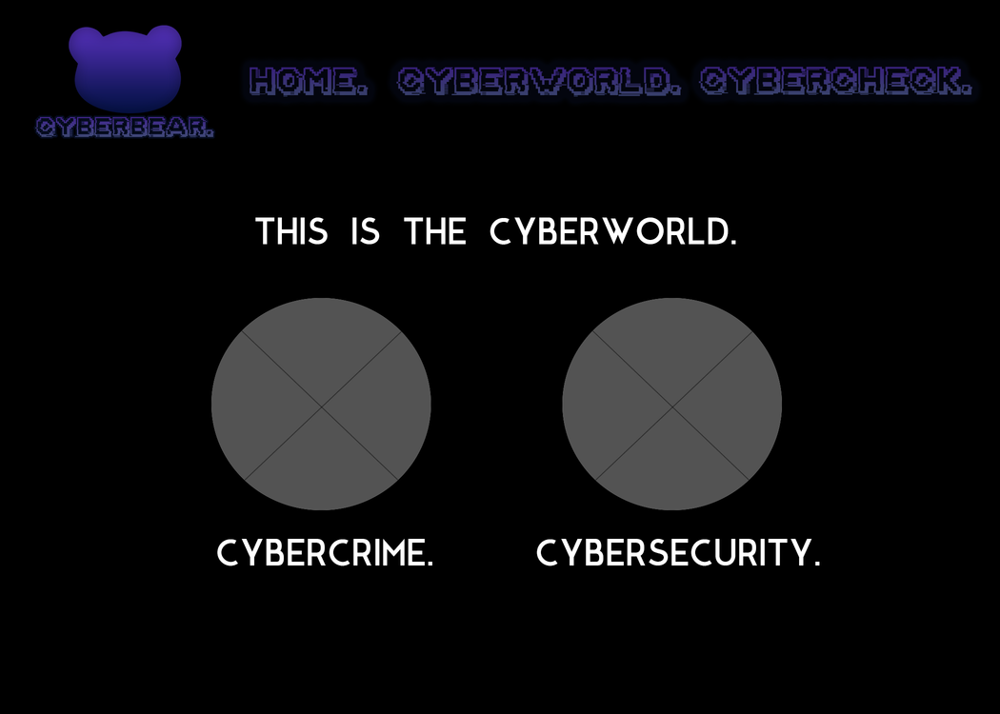
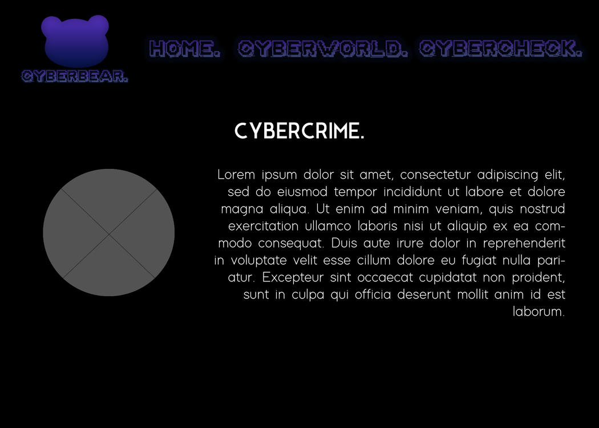
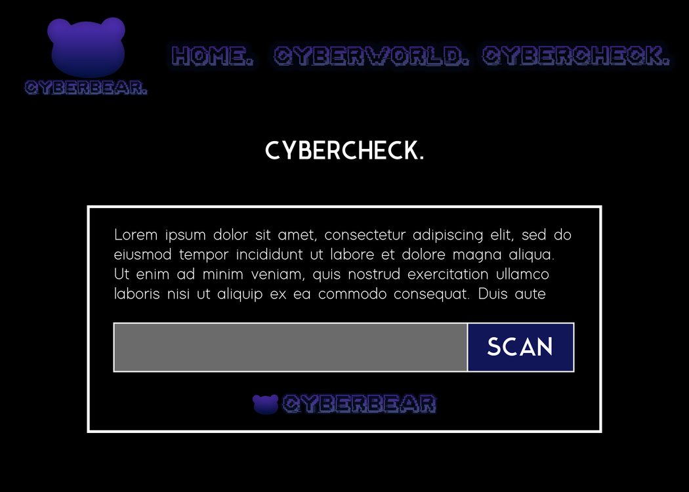

Concept
We all know that the internet is an extraordinary communication system that allows us to access anything as long as it’s online. Since it's open-sourced, this creates opportunities for dangerous activity attempting to steal personal information. Most people aren’t aware of the dangers there are online and automatically assume the website they’re on is safe. If on the wrong website, hackers could access your private information and data and many people are at risk simply because they don’t know what’s out there and how it can affect them. However, this is why we have such thing as cybersecurity - the protection of internet-connected systems such as hardware, software and data from cyber-threats.
This website aims to inform individuals that have zero knowledge about cybercrime and how to assure that they’re safe on the internet. In general, internet users of all ages. Cyberbear is your internet best friend that will introduce the basic information of cybercrime and cybersecurity, as well as having an official website reputation/safety checker. This feature checks the online reputation and safety of a website just through the pasting of a link. When Cyberbear scans the link, an analysis is giving to the user and a final decision of whether the website is safe to use or not.
What is Cyber Crime?
Cybercrime is defined as a crime where a computer is the object of the crime or is used as a tool to commit an offence. A cybercriminal may use a device to access a user’s personal information, confidential business information, government information, or disable a device. It is also a cybercrime to sell or elicit the above information online. Cybercrimes can generally be divided into two categories: Crimes that target networks or devices such as viruses, malware and DoS attacks and crimes using devices to participate in criminal activities, such as phishing emails, cyberstalking and identity theft.
What is Cyber Security?
Cybersecurity is the practice of protecting systems, networks, and programs from digital attacks. These cyberattacks are usually aimed at accessing, changing, or destroying sensitive information; extorting money from users; or interrupting normal business processes. Implementing effective cybersecurity measures is particularly challenging today because there are more devices than people, and attackers are becoming more innovative.
VISUAL DESIGN.
SECONDARY LOGO
REFERENCE WORK
URLVOID: This website outlines the best example for the website checker feature Cyberbear will include. By pasting a link, the user will be able to know if a website is secure or not. “Urlvoid” provides multiple blacklists, threat analysis and a safety report. Cyberbear aims to consist of cyber threat analysis and a safety review of the inserted website.
Information consisting of cybercrime & cyber security:
USER FLOW.

INTERFACE DESIGN.
HOMEPAGE

CYBERWORLD [1/2]

CYBERWORLD [2/2]

CYBERCHECK [1/2]

CYBERCHECK [2/2]